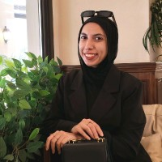
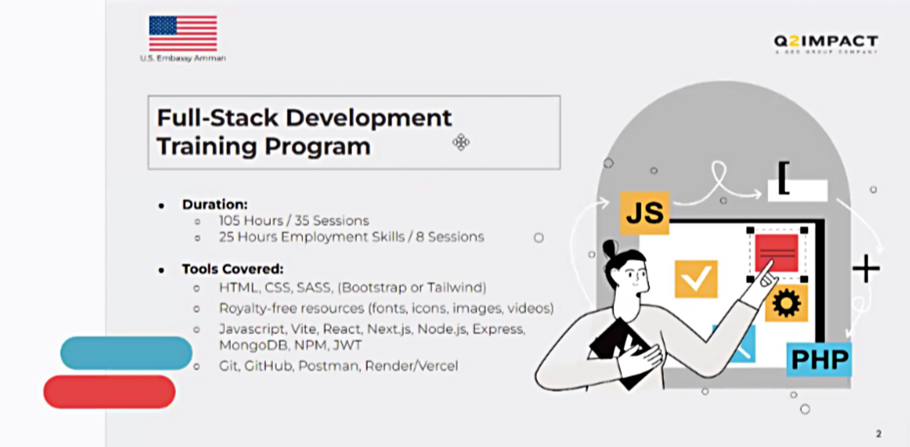

Renad Alghoul
Full-Stack Trainee
Renad Alghoul is a dedicated Full Stack Web Development trainee with a proactive approach to learning and community contribution. In her current volunteer role, she focuses on building intuitive front-end interfaces while expanding her knowledge across the full development stack. Renad is driven by a desire to create impactful web applications and is constantly seeking opportunities to apply her technical skills in collaborative environments.

Achievements:
A significant milestone in Renad’s professional development is her selection for the intensive Full-Stack Development Training Program. Supported by the U.S. Embassy Amman and organized by Dot Jordan, this rigorous 130-hour program covers 105 hours of deep technical training and 25 hours dedicated to essential employment skills. Through this program, Renad will master a modern technology stack in web applications.